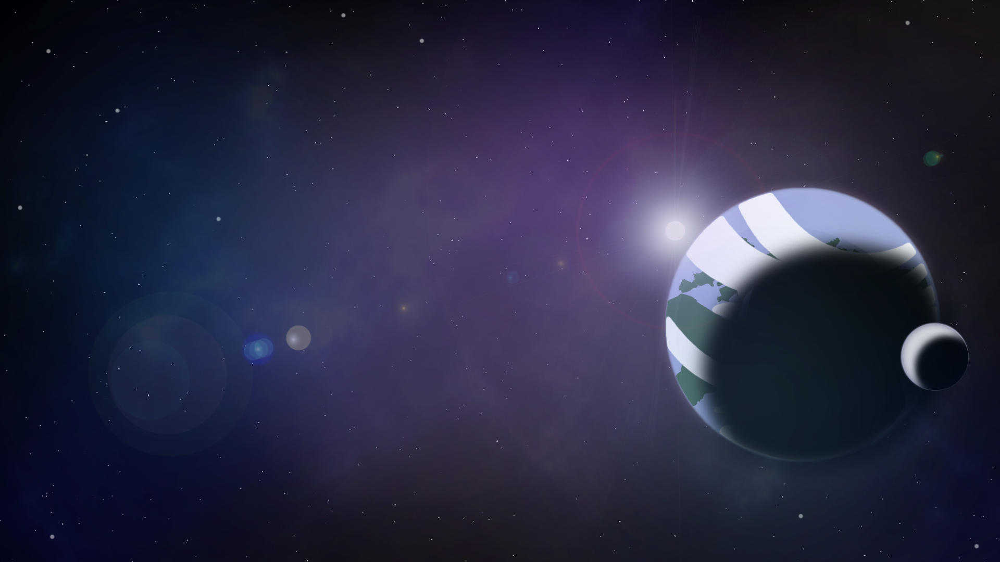
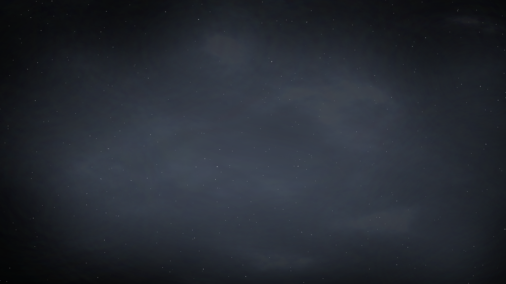

Caelus Trident
Problem
I was responsible for creating the backgrounds for Caelus Trident PC game. This involved heavy use of Photoshop to create several simple space scenes then one near planet Earth. This was the first game the team worked on and the art style of the game director shifted midway through.
Insight
Key to this project was keeping it simple but still visually interesting. The shifting vision changed how I utilized my art skills. The detailed version I first used had to be simplified and colors changed to fit the new cartoon style.
Approach
I researched several space photos and tested them together to see how they looked. When the vision changed, I did further research of how cartoon styles can mesh with more realistic styles. Trying to strike a balance between the two became the challenge.
Solution
With the exception of the planet image, I created all these images from scratch using filters in Photoshop. I spent a lot of time on the Milky Way image to make it look as accurate as possible.
When the vision changed I used similar techniques but focused on decreasing the amount of detail and adding extra colors that may not necessarily be present to add a sense of fantasy to it. The combination created a unique look that reflected the vision of the game designer.
Result/Outcome
The struggle I had with this project came from being very proud of my more realistic images and having to let them go in the final product. However, the game designer’s vision came first and I created a cartoon space look that the team was proud of.

